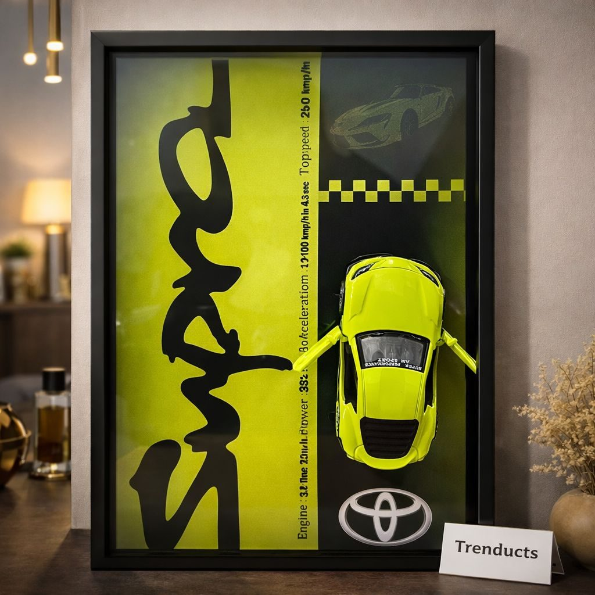
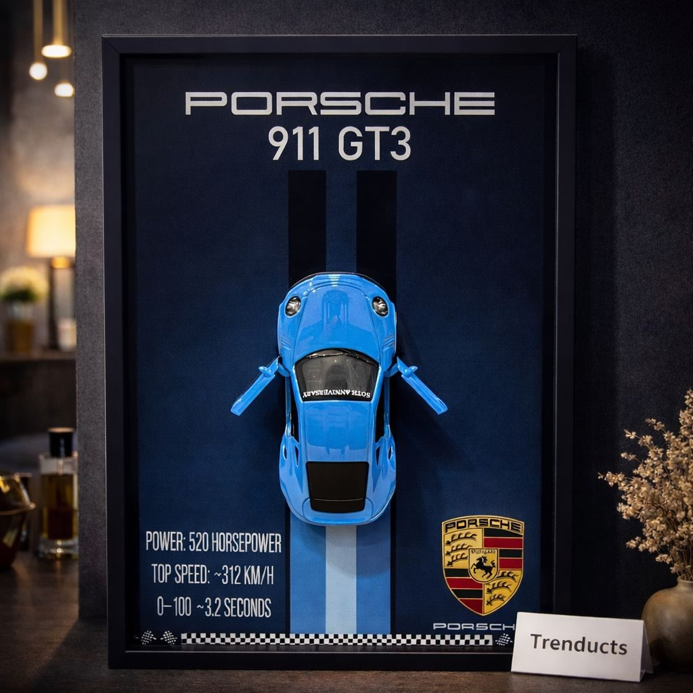
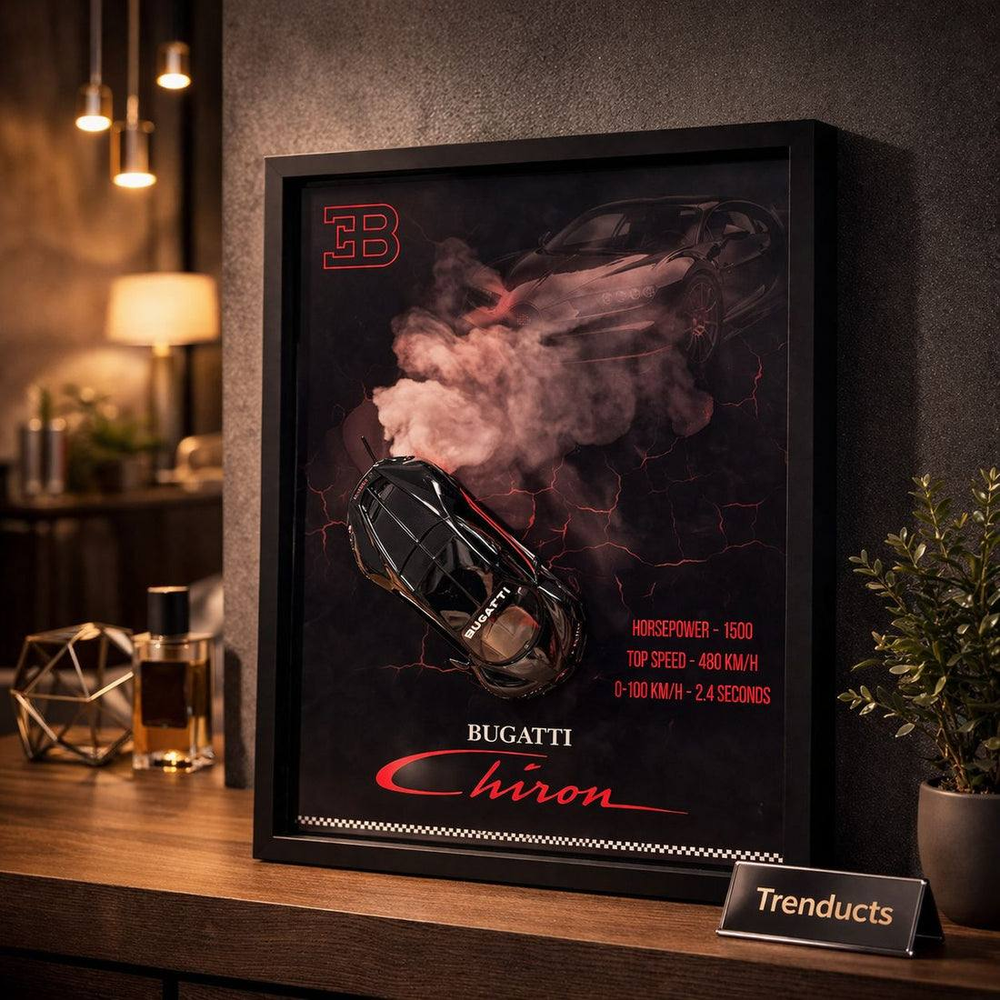

Many children in Pakistan grow up obsessed with cars. Toddlers line up toy cars across the lounge, ten-year-olds know every model that passes on the street, and teenagers follow Formula 1, watch car reviews and dream of their first ride. When it is time to redecorate a boy's or teenager's room, that passion is a perfect starting point.
A themed room does not have to look childish or cluttered. With the right wall art, colours and layout, a car-inspired room can grow with your child from primary school to university. This guide shows how.
Start with the walls
The walls set the tone. Choose a calm base colour so the room does not feel overwhelming: grey, navy, white or a soft blue work well and suit both younger and older children. Then add one feature wall behind the bed or desk for the main artwork. Avoid painting racing stripes everywhere; they look dated quickly and are hard to change.

Choosing car wall art
Wall art is where the theme comes alive. Options include:
- Framed 3D kinetic car art, with metal car models mounted in wooden frames, which looks premium and three-dimensional
- Posters of classic and modern cars, framed for a neat finish
- A large print of a famous racetrack layout
- Number plates or vintage signs as decor accents
- A shelf to display a collection of die-cast model cars
3D framed pieces featuring iconic cars like the Porsche 911, Toyota Supra or Bugatti Chiron are popular with teenagers because they look stylish rather than childish. You can see such pieces in this wall decor collection and choose one or a set of three for a gallery look.
Creating a gallery wall
A set of three matching frames arranged in a row above the bed or desk looks balanced and intentional. Measure the wall, and keep frames about 20 to 25 cm above the headboard. Lay frames on the floor first to plan spacing, keeping 5 to 8 cm between them. If you rent or do not want to drill, strong adhesive picture hooks rated for the frame weight work well on smooth walls.
Furniture and layout
A study desk is essential for school-age children. Place it near natural light, with a comfortable chair. A bed with storage drawers underneath helps keep toys, sports gear and seasonal clothes out of sight. Keep the floor clear for playing or relaxing. For teenagers, a small seating corner with a bean bag gives a place to hang out with friends.

Colours and accents
Pick two accent colours and use them in cushions, bedsheets, a rug and the desk chair. Red and black give a racing feel, blue and white feel sporty and calm, and orange with grey looks modern. Keep accents limited so the room stays tidy-looking.
Lighting
Good lighting matters for study. Use a bright ceiling light, a focused desk lamp for homework, and a soft bedside light for reading. LED strip lights behind the bed or desk are popular with teenagers and give a garage-like glow, but keep them dim and warm at night for better sleep.
Make it grow with your child
Children's tastes change fast. Keep expensive items, like furniture and paint, neutral, and express the theme through easy-to-change items such as frames, bedsheets and decor. A five-year-old's cartoon car bedding can become a teenager's sleek framed supercar art, without repainting the room.

Involve your child
Let your child choose some of the artwork and accents. They will feel proud of the room and more likely to keep it tidy. Set a simple rule: model cars live on their shelf, not on the floor.
Final thoughts
A car lover's room can be stylish, practical and personal. Choose calm walls, add statement car art in a balanced gallery, plan the furniture for study and storage, and keep the theme flexible. Your child gets a room that reflects their passion, and you get a space that grows up gracefully with them.